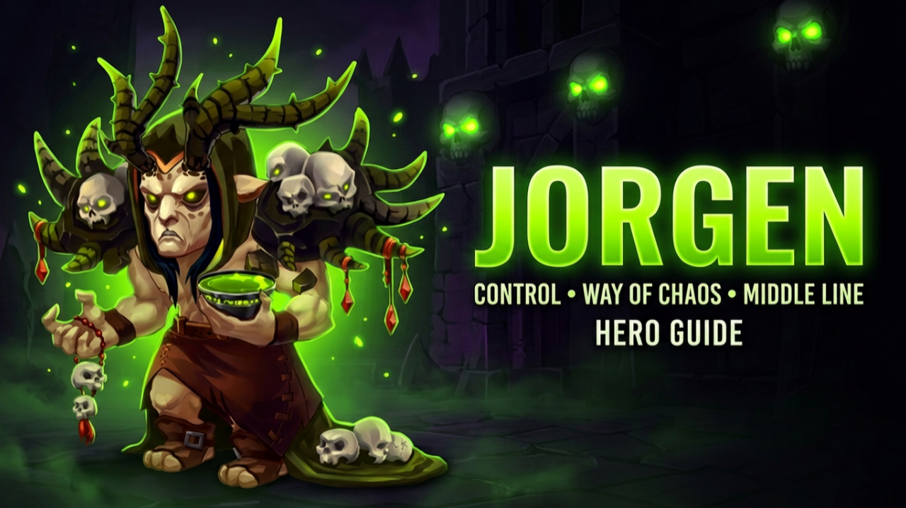

JORGEN
Jorgen controls one of the most important resources in battle: Energy. He can prevent enemies from gaining it, steal it with basic attacks and accelerate the Energy generation of his allies.
CONTROL THE ENERGY. CONTROL THE FIGHT.
Jorgen is not built around massive burst damage. His strength comes from disrupting enemy timing while accelerating his own team's win condition. The longer he remains active, the harder it becomes for the enemy to execute its normal battle rhythm.
SKILLS
Torment of Powerlessness
Jorgen summons a massive skull onto the enemy frontline, dealing Magic Damage to nearby enemies and preventing affected targets from gaining Energy for nine seconds. The damage scales with Magic Attack.
Cycle of Energies
Jorgen protects one ally with a magical shield. While the shield remains active, that hero gains Energy at twice the normal rate. The shield scales with Jorgen's Magic Attack.
Leper
Jorgen curses the enemy team for ten seconds, redirecting all Physical Damage they receive toward the furthest enemy hero. The skill does not scale with Jorgen's stats and depends on skill level.
Tainted Wounds
Every time Jorgen attacks, he steals Energy from his target. Each attack can delay another enemy Ultimate, reinforcing his ability to control the pace of combat.
KEY SYNERGIES
CLEAVER
Rusty Hook can pull additional enemies toward the area affected by Torment of Powerlessness.
KRISTA + LARS
Krista can prepare the battlefield with Frozen Needles, while Lars can drag enemies into Jorgen's skull using Lord of the Storm.
FACELESS
Faceless can copy Torment of Powerlessness, potentially extending the enemy team's Energy denial even further.
ORION
Orion can provide additional Magic Penetration to the team, increasing the magical pressure around Jorgen's control-oriented playstyle.
SKINS
Improves Torment of Powerlessness and strengthens the shield from Cycle of Energies.
Continues strengthening Jorgen's offensive scaling and his support shield.
Reduces incoming damage once Jorgen falls below fifty percent Health, increasing survivability.
Helps Jorgen survive against dangerous enemy mages and continue disrupting the battle.
Improves his primary stat and contributes additional survivability.
Useful for durability, but lower priority than Magic Attack and Jorgen's defensive resistances.
Future skins: another Magic Attack or Magic Defense Skin would become one of Jorgen's highest development priorities.
GLYPHS
Improves the Ultimate's damage and strengthens the shield provided through Cycle of Energies.
Improves survivability against enemy mages and helps Jorgen remain active for longer.
Compensates for the absence of an Armor Skin and improves his resistance to physical attackers.
Improves his primary stat and provides additional durability.
Useful additional survivability, but lower overall priority than Magic Attack and defensive stats.
Progression: bring every Glyph to around Level 40 before pushing them significantly further unless you are progressing Hero Classes.
ARTIFACTS
WEAPON
Grants the entire team a Magic Attack bonus whenever Jorgen activates Torment of Powerlessness. Particularly valuable in magic-based compositions.
BOOK
Provides Armor and Magic Defense, significantly improving Jorgen's survivability.
RING
Increases Strength, providing additional durability after the more impactful Weapon and Book investments.
GIFT OF THE ELEMENTS
MAX IT OUT
Jorgen needs enough durability to survive burst damage and remain active. Every permanent stat increase gives him more opportunities to cast his Ultimate and continue disrupting enemy Energy generation.
TALISMANS
Maximum Survivability
An excellent option when the objective is maximizing Jorgen's defensive profile and survivability.
Control + Durability
Strengthens Jorgen's Magic Attack while simultaneously improving his physical durability through Armor.
JORGEN COUNTERS
SATORI
Jorgen's Energy manipulation can trigger Satori's passive and contribute to additional Fox Fire Marks.
MARTHA
Her strong survivability can reduce the impact of Leper when she becomes the furthest target.
NEBULA
Serenity removes negative effects from nearby allies, helping them recover from Jorgen's control.
SOLEIL
Punishes enemy control heroes by increasing the damage they receive when applying control effects.
POLARIS
Continuous stuns can interrupt Jorgen's rhythm, delaying attacks and slowing his Energy stealing.
JORGEN WINS BY DENYING OPPORTUNITIES.
Jorgen controls combat by stopping Ultimates, accelerating allies, disrupting enemy timing and manipulating Energy. His value comes from controlling the rhythm of the battle and preventing the enemy from executing its normal game plan.